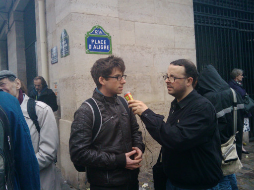

| |
Site dédié à la publication d'informations communiquées par le Collectif des déboulonneurs. En aucun cas ce site n'appelle à des actions illégales. | |
 |
||
|
Accueil du site > Paris > 65e action parisienne : compte-rendu
65e action du Collectif des Déboulonneurs de Paris 
Samedi 2 mai 2015 Lieu du barbouillage (écriture de message à la peinture) : Gare de Lyon Heure approximative du barbouillage : 15h45 Nombre de faces d’écrans publicitaires barbouillées : 8 Messages écrits sur des faces d’écrans publicitaires : "Attention à la pub en descendant du train", "Pub = danger de mort", "Liberté de réception", "La pub tue", "La pub n’est pas Charlie", "Agression visuelle", "La pub pollue nos rêves". Nombre de barbouilleurs et barbouilleuses : 5 Nombre d’interpellations : 7 (5 barbouilleurs et barbouilleuses, 1 porteur de mégaphone, 1 porteur de documents d’information) Nombre de présent-e-s : 25 Médias : Radio Ado, 1 journaliste indépendant venu de Belgique, Lors de cette action non-violente de désobéissance civile, visant à alerter des dangers du système publicitaire (sanitaire, économique, démocratique, environnemental), 7 personnes dont 5 barbouilleurs et barbouilleuses ont été arrêtés par la police et la sureté ferroviaire. Elles ont d’abord été emmenées au commissariat de Gare de Lyon. Menottées pour le transport, elles ont été conduites au commissariat du XX° arr. Il leur a été remis une convocation pour être auditionnées ce lundi 4 mai 2015. Mise à jour du 5 mai 2015 : Les 5 barbouilleu/se/s et le porteur de mégaphone ont été auditionnés ce lundi 4 mai 2015 au commissariat du XX° à Paris. Celui proposant des documents d’information a été auditionné le dimanche 3 mai. Le procès verbal de l’audition expose les motifs suivants : participation à une manifestation non autorisée et dégradations volontaires de biens publics. Dans le cadre de cette audition, il a été demandé aux personnes de se soumettre à un prélèvement ADN, ce qu’elles ont toutes refusé. Il leur a été adressé un procès verbal pour refus de prélèvement ADN. Cette action a été applaudie par les sympathisant-e-s. De nombreux soutiens ont été manifestés parmi les usagers de la gare qui déplorent le matraquage publicitaire et le déploiement massif des écrans animés publicitaires dans les gares et les couloirs du metro, soit une publicité encore plus imposée et agressive. Remarques : Le 25 mars 2013, dans le cadre d’un procès pour l’action de désobéissance civile du 28 février 2009, 6 barbouilleurs ont été relaxés sur le fondement l’état de nécessité par la Justice. La nocivité de la publicité a été reconnue par le tribunal. L’entreprise publicitaire JC Decaux avait demandé 895€ de dommages et intérêts pour préjudice (frais de nettoyage). Après avoir été déboutée en 1ère instance, et malgré la relaxe reconnaissant que la publicité est un préjudice, cette entreprise a fait appel. Un procès se tiendra le 4 septembre 2015. Mise à jour du 6 octobre 2016 : JC Decaux a été débouté en appel, la Cour jugeant sa demande prescrite. Compte-rendu en images |
|
Site utilisant SPIP - Hébergement Ouvaton
|